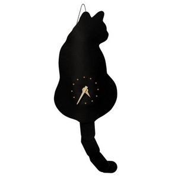
집꿀템 노트
릴스에 나온 생활 꿀템을 최신 순으로 모았어요
이 페이지는 쿠팡 파트너스 활동의 일환으로, 이에 따른 일정액의 수수료를 제공받습니다. 가격과 재고는 쿠팡에서 확인해 주세요.
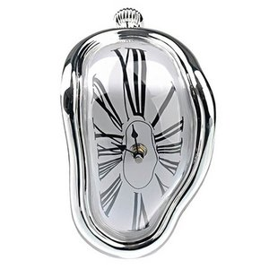
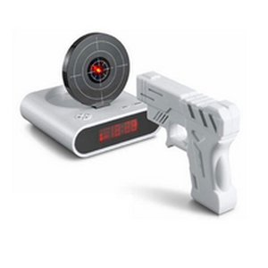
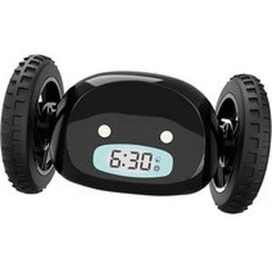
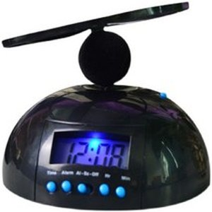
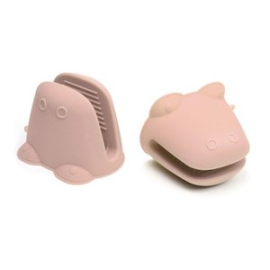
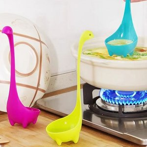
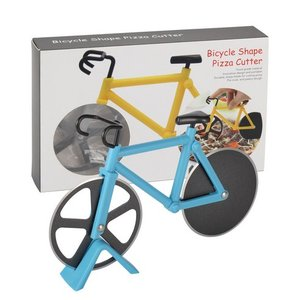
기상천외 동물 주방템 TOP5 · 1위
음식 식혀주는 동물 선풍기 후후동물친구 그린 공룡
그릇 가장자리에 공룡을 걸어 두면 입으로 바람을 불어 뜨거운 국물과 면을 식혀 줘요. 줄을 달아 목에 거는 휴대 선풍기로도 써요.
쿠팡에서 보기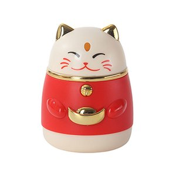
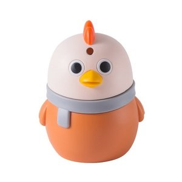
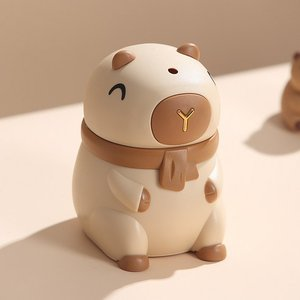
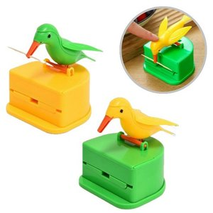
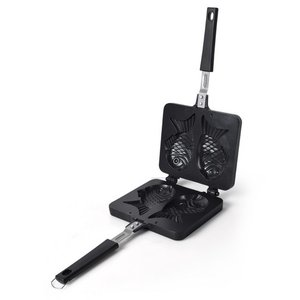
겨울 붕어빵이 먹고 싶은데 노점 찾기 어렵고 줄이 길어 한참 떨어야 함
이지쿠커 붕어빵팬 2구, 18cm, 1개
가스레인지에 올려 반죽을 붓고 팥을 얹은 뒤 뚜껑을 닫아 앞뒤로 뒤집으면, 집에서 바로 노릇하고 바삭한 붕어빵 두 마리가 나와요.
쿠팡에서 보기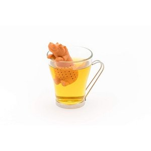
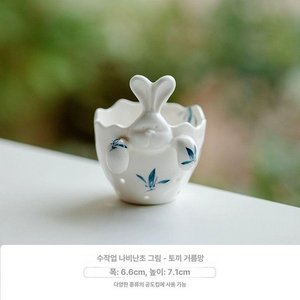
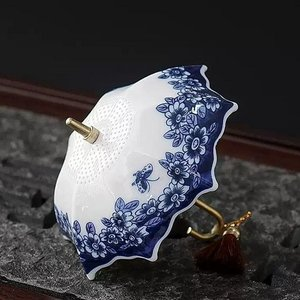
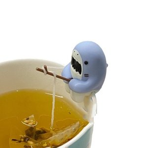
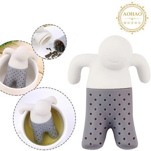
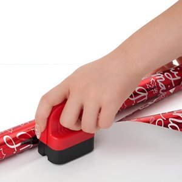
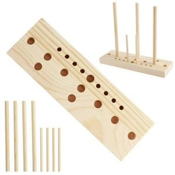
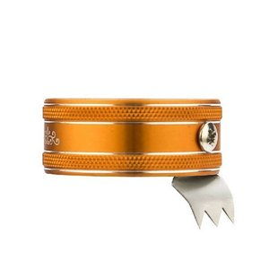
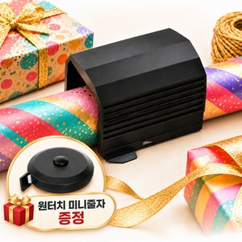
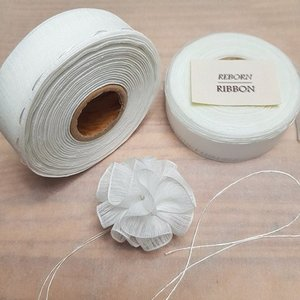
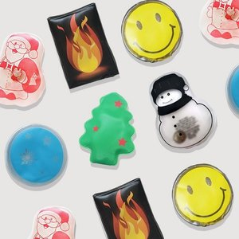
출근길·등굣길 손이 꽁꽁 얼어 폰도 키보드도 안 눌림
엄마가끓여주던 똑딱이 손난로 재사용 핫팩 액체형 국산, 2개
투명한 팩 속 작은 금속 단추를 똑 꺾으면 하얗게 굳으면서 따끈해지고, 다 쓰면 끓는 물에 넣어 다시 투명하게 되돌려 또 쓸 수 있어요.
쿠팡에서 보기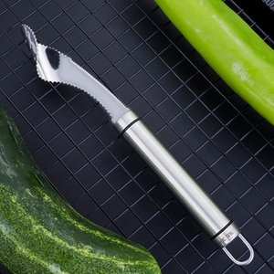
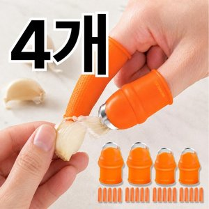
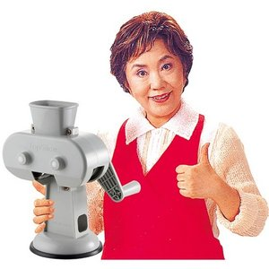
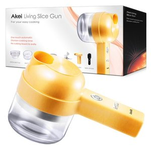
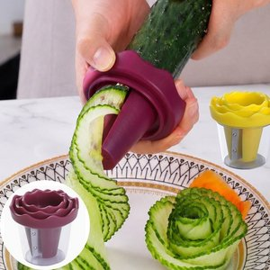
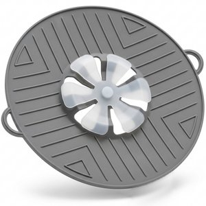
라면·찌개가 끓어 넘쳐 가스레인지가 엉망이 됨
아노리빙 실리콘 다용도 냄비넘침방지 덮개 기름튐방지 뚜껑, 1개
냄비에 얹어 두면 끓어오른 거품이 가운데 꽃잎까지 올라왔다가 다시 가라앉아서 넘치지 않아요.
쿠팡에서 보기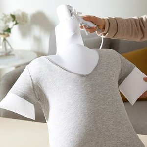
내일 입을 옷이 밤새 안 말라 아침에도 축축함
휴대용 의류 드라이기 롱패딩 건조팩 겨울 옷 퀵 건조파우치 세탁 털살리기 점퍼 셔츠 드라잉, 1개, 1개입
사람 몸통 모양 주머니를 젖은 티셔츠 안에 넣고 드라이기를 꽂으면, 옷이 사람이 입은 것처럼 빵빵하게 부풀어 안쪽부터 말라요.
쿠팡에서 보기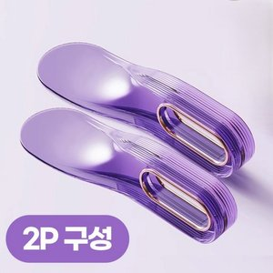
매트리스가 무거워 침대 시트 갈기가 허리 아프고 힘듦
이지앤코 침대 매트리스 리프터 보조 주걱, 2개, 퍼플
납작한 투명 주걱을 매트리스 밑에 밀어 넣으면 한 손으로 매트리스가 들리고, 시트 끝을 틈 사이로 쏙 밀어 넣을 수 있어요.
쿠팡에서 보기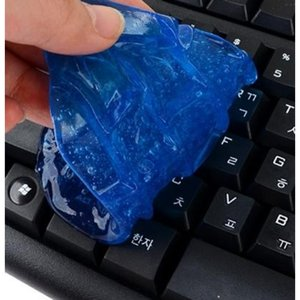
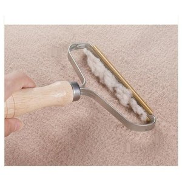
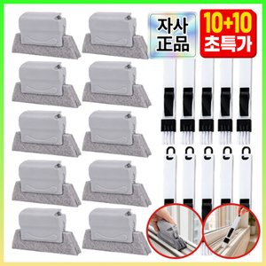
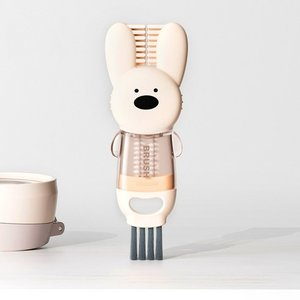
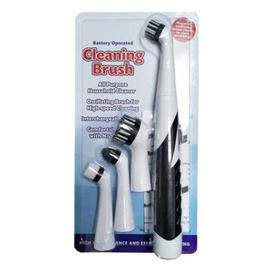
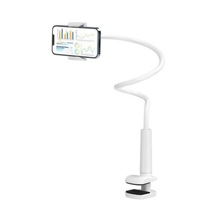
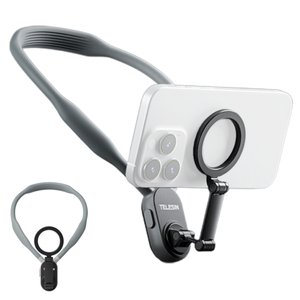
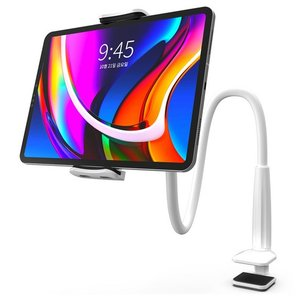
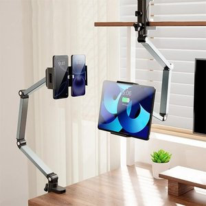
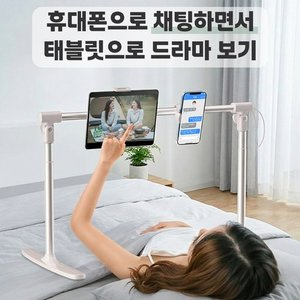
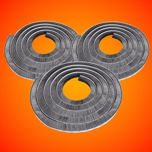
창문 닫아도 찬바람이 솔솔
2026년형 슥잠 실내 열유출방지 모헤어 문풍지 2.5M, 15mm, 3개
창틀 틈에 접착 띠를 떼서 붙이면 솔이 틈을 메워 찬바람이 드는 길을 줄여 줘요. 남는 부분은 가위로 잘라 쓰면 돼요.
쿠팡에서 보기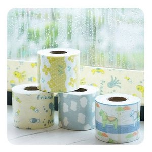
겨울 아침마다 창문이 물바다
봄산 창문 결로방지 물 흡수 테이프 2.8m 1+1+1+1, 1세트
유리 맨 아래에 붙여 두면 흘러내린 결로 물을 테이프가 머금어 창틀에 물이 덜 고여요. 창 길이에 맞게 가위로 잘라 붙이면 돼요.
쿠팡에서 보기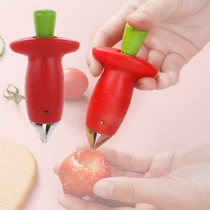
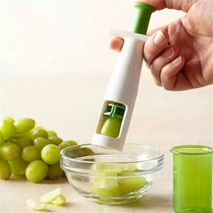
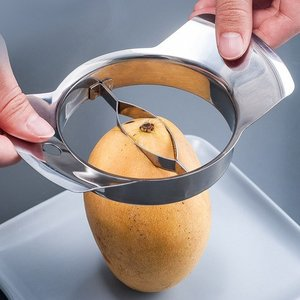
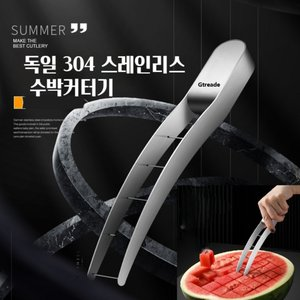
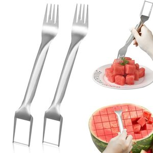
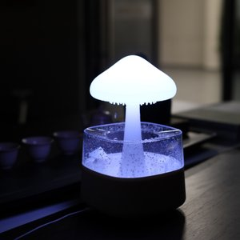
겨울 이불 꺼내니 옷장 문이 안 닫힘
헤인느 투명 이불 의류 진공 압축팩 + 전용펌프 세트
이불·패딩을 넣고 지퍼를 끝까지 잠근 뒤 손펌프로 밸브에서 공기를 빼면 납작해져 옷장에 세워 넣을 수 있어요.
쿠팡에서 보기아침마다 창틀에 고이는 결로 물
스코라 물흡수 테이프 10cm x 5m
유리 맨 아래에 붙이면 흘러내린 물을 머금어 창틀에 물이 덜 고여요. 다 젖으면 새 걸로 갈아 주세요.
쿠팡에서 보기